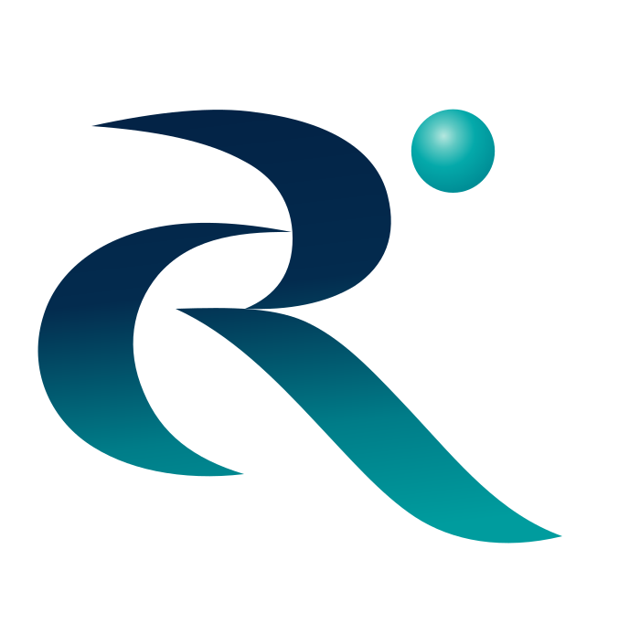

Odak Alanımız
Terapötik odağımız, özelleşmiş ilaç uzmanlığının, hedefe yönelik ticari uygulamanın ve sağlık ortamının net bir şekilde anlaşılmasının özellikle önemli olduğu alanları yansıtmaktadır.
Mevcut odağımız nadir hastalıkları, yetim ilaçları ve seçilmiş özel farmasötikleri kapsamaktadır.
Nadir hastalıklar, genellikle karmaşık tanı süreçleri, sınırlı hasta popülasyonları ve yoğunlaşmış tedavi ortamlarıyla karakterize edilen, oldukça özelleşmiş bir sağlık alanını temsil etmektedir.
Bu alandaki ilgimiz, odaklanmış ilaç uzmanlığının ve uygun ticari uygulamanın Türkiye'deki gelişimlerine katkıda bulunabileceği seçilmiş tedavileri destekleme fırsatından kaynaklanmaktadır.
Yetim ilaçlar, terapötik odağımızın merkezinde yer almaktadır.
Nadir ve ciddi durumlara yönelik seçilmiş tedavilerle, özellikle odaklanmış bir ticari organizasyonun ürüne uygun düzeyde pazar anlayışı, dağıtım kapasitesi ve ticari ilgi sağlayabileceği alanlarla ilgileniyoruz.
Odağımız aynı zamanda özelleşmiş sağlık hizmeti etkileşimi, hedefe yönelik ticari stratejiler ve disiplinli pazar geliştirme gerektiren seçilmiş özel farmasötiklere de uzanmaktadır.
Her fırsatı, terapötik özelliklerine, sağlık ortamına ve OrphaRx ile stratejik uyumuna göre değerlendiriyoruz.